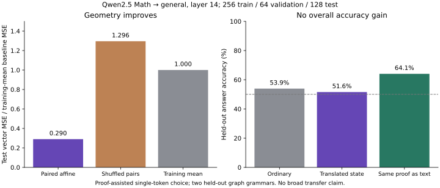

Build the smallest useful bridge.
A practical route from verified mathematical tasks to representation alignment, useful model communication, and eventually student learning. One reproducible result at a time.
Use your browser's Find command to search. All content is included in this file; only source links need an internet connection.
01RoadmapThe first evening, six milestones, ten toys, eight-week plan+
Working name: LemmaFerry. Working question: Can verified mathematical experience be translated into useful training signals for a general language model?
Prepared for Ian Prado and a prospective collaborator on October 16, 2026. The schedule assumes each person can contribute roughly four to six hours per week, an existing laptop, and no paid compute for the first milestone. These are planning assumptions, not requirements. The project can proceed more slowly without changing its scientific question.
1. What you are actually starting
You have a plausible research direction and several separable hypotheses. The credible first open-source contribution is a small benchmark, generator, translator baseline, and evaluation protocol that other people can reproduce. You do not need to claim that you can build AGI to publish that. Nor do you need to master statistical mechanics or topology before running an affine regression experiment.
The broad idea has close predecessors. The source map explains where this project overlaps existing work. The contribution to investigate is the combination: correct-by-construction tasks, explicit representation translation, and tests that distinguish geometric alignment from useful reasoning transfer. Whether this combination adds value is an empirical question.
| Layer | What it does | First implementation |
|---|---|---|
| Formal world | Defines objects, premises, inference rules, and target claims | Tiny propositional implication graphs |
| Generator | Constructs tasks and proof certificates | Deterministic Python generator, later a learned proposer |
| Checker | Checks that a formal proof proves the stated claim under stated assumptions | Lean, separate from the neural model |
| Semantic view | Expresses the same tiny world as a language task | Controlled renderer from the same graph |
| Representation translator | Maps source activations to a recipient model's chosen interface | Affine ridge regression, then a small nonlinear adapter if justified |
| Learner | Uses translated states or trains on generated examples | Small related open-weight models |
| Evaluator | Tests unfamiliar problems, costs, and general-capability retention | Fixed family splits and explicit controls |
Keep these meanings separate
- A Lean proof is a formal object. An embedding of a proof is a learned representation of that object. Lean does not certify what an arbitrary embedding means.
- A neural prover proposes proof text or actions. Lean checks the formal result. They have different jobs.
- New proofs create new activation vectors when a model processes them. Those activations do not automatically become persistent knowledge.
- Moving vectors with a matrix is a representation change. Updating a model's parameters is learning. Supplying a teacher at inference is assistance.
- A generated theorem can be a new training example without being a mathematical discovery new to humanity.
- A Lean-accepted proof can use classical axioms. This starter's tiny implication fragment aims for no axiom dependencies; broader constructive restrictions require an explicit policy.
- Formal correctness establishes a consequence of premises. A natural-language description still needs a separate correspondence check, and an empirical premise still needs evidence from the world.
2. Your first 90 minutes
Do these in order. A domain purchase and an LLM download are not prerequisites.
- Open the starter's README. Read the status table before running anything. Know which parts were tested and which remain unrun.
- Create a Python environment and run the tests. Use Python 3.10 or newer. Follow the exact quick-start commands in the README.
- Run the artificial alignment experiment with seed 7. Open the output JSON. Find the paired, wrong-pair, and mean-output errors.
- Change the seed to 19. Explain why the wrong-pair task accuracy changes while its regression error remains poor. Do not select the nicer seed for a public claim.
- Read the ambiguity counterexample. A half-turn of a symmetric point cloud has excellent geometric matching and the wrong semantic labels. This is why pairing and task evaluation matter.
- Generate 20 implication problems per split. Open one JSONL record and its Lean declaration. Trace its short proof by hand.
- Create an empty public GitHub repository called
lemmaferry. Follow launch.md, review the staged files, and push the starter. The supplied package has not been pushed to your account. - Create three initial issues: run Lean verification, reproduce both alignment seeds, and choose the first actual-model experiment. Invite your cousin after you confirm their GitHub username yourself.
Finish line: a repository another person can clone, a reproducible CPU result, one understood formal example, and an honest list of untested claims.
3. What this starter already gives you
| Included item | What you can do now | Limit |
|---|---|---|
alignment.py |
Fit a train-standardized affine ridge map with different source/target dimensions | Artificial tests do not establish neural-model transfer |
toy_alignment.py |
Reproduce paired versus shuffled anchors and the symmetric-cloud counterexample | Shared factors are deliberately planted |
logic.py and generate_logic.py |
Generate graphs, rule-chain answers, Lean proof terms, and controlled language views | Small fixed grammar; every selected target is reachable |
check_lean.py |
Run Lean with timeouts and axiom audits; keep per-example results | Lean was absent during preparation, so generated proofs are initially not_run |
collect_activations.py |
Collect actual-model activations when you install optional dependencies and download chosen checkpoints | Model inference has not been executed in the supplied environment |
fit_activations.py |
Fit a validation-selected affine map to collected arrays and compare controls | It evaluates representation error, not downstream model capability |
| Documentation and templates | Publish the project, divide work, register experiments, and record provenance | The future experiments still need to be implemented and evaluated |
See validation.md for the exact completed checks. No model weights or large source corpora are bundled. The private July conversation and scanned sketch are not in the public-ready repository.
4. The milestones and the evidence each requires
Milestone A: establish the mechanics
Question: Does the affine translator implementation recover a known relationship on held-out numeric vectors?
- Run seeds 7 and 19 with the default settings.
- Run with noise zero, then increase noise to 0.1.
- Compare paired anchors, shuffled anchors, and training-mean prediction.
- Confirm that normalization uses training rows only.
- Draw the optional plot and commit the small result JSON plus the command.
Done when: another person reproduces the numbers within documented numerical tolerance. A default paired normalized RMSE below 0.05 is an engineering sanity check for this planted toy, not a research success threshold for real models. If the toy fails, fix the implementation before introducing model complexity.
Milestone B: generate genuinely checked formal data
Question: Can the pipeline create tasks, formal proofs, and matching language views while keeping their verification status accurate?
- Install the pinned Lean toolchain through the official instructions.
- Check the generated train, validation, and test files with the provided runner.
- Keep compiler version, diagnostics, and zero-axiom output with each accepted record.
- Deliberately corrupt one proof. Confirm it fails and cannot retain an old success status.
- Deliberately insert an incomplete proof. Confirm it is rejected even if a compiler process exits successfully.
- Have both collaborators inspect at least five examples from each split.
Done when: the intended accepted sample passes Lean and its axiom audit, altered examples fail, and the renderer preserves the same graph. If Lean has not run, keep the not_run status. A Python certificate check is useful and does not replace this gate.
Milestone C: align actual-model representations
Question: Can an affine map predict a recipient model's activations on unseen task families better than simple controls?
- Follow llm-experiment.md.
- Begin with identical short input prompts for both models. This isolates coordinate alignment from language translation.
- Record the exact model commits, tokenizer hashes, layers, positions, input hashes, and packages.
- Debug on about 30 examples before collecting thousands.
- Fit regularization on validation data only. Keep the test set untouched until the choice is fixed.
- Compare shuffled anchors and training-mean outputs; add an identity map when dimensions match.
Done when: a fresh collection and fitting run produces a complete manifest and a clear held-out result, positive or negative. Do not require a positive result to publish. This milestone establishes representation alignment only.
Milestone D: establish functional transfer
Question: Does the translated representation help the recipient answer questions, beyond what text or simple controls provide?
- Choose a single insertion point and document whether the state is before or after normalization.
- Implement an identity/oracle intervention using the recipient's own states. It should preserve the recipient's predictions within numerical tolerance.
- Implement the translated-source intervention at that exact interface.
- Test the recipient alone, the source alone, plain-text communication, translated states, shuffled states, and zero/mean states.
- Keep input information and decoding budgets matched. If the source sees a solution, compare with an equally solution-informed text teacher and label that condition.
- Evaluate exact rule-chain correctness or next-token loss on held-out problem families, not only embedding distance.
Done when: the intervention is reproducible and its result is interpreted narrowly. A clean functional failure despite good alignment is an informative result. Increase adapter complexity only if the failure points to a specific missing capability.
Milestone E: teach a standalone student
Question: Does training on checked synthetic examples improve the student when the mathematical teacher and translator are absent at evaluation?
- Create a small fixed text dataset from the formally checked tasks and audited renderings.
- Fine-tune a small student with a modest parameter-efficient method or an explicitly bounded full-tuning run.
- Compare equal training-token/step budgets: controlled renderer data, learned-translator data if available, and a simpler nonformal synthetic baseline.
- Evaluate unseen structures and a small frozen general-language retention set.
- Repeat training with three seeds before advertising a capability gain.
Done when: the student is evaluated alone, with all controls and compute reported. A suggested later confirmatory criterion is at least five percentage points of held-out task improvement with a paired uncertainty interval excluding zero, chosen before the run. That is a proposed local criterion, not a field standard or a guaranteed achievable result.
Milestone F: test adaptive improvement
Question: Does a curriculum adapting to the current learner outperform a fixed generator at the same total budget?
- Implement only after a useful standalone or connected-system baseline exists.
- Keep a fixed-generator control. Give both conditions the same total generated candidates, proof attempts, training tokens, and compute accounting.
- Score candidate usefulness using the current learner on training/validation tasks, never the held-out test set.
- Prefer tasks near the learner's current frontier while enforcing diversity and nontriviality.
- Retain some older data to measure and reduce forgetting; compare a replay condition explicitly.
- Evaluate after a fixed number of rounds and report unsuccessful candidates as part of the cost.
Done when: adaptation beats the fixed curriculum under the registered budget, or a reproducible failure reveals why it does not. More generated proofs alone do not demonstrate recursive capability improvement.
5. Concrete toy problems to work through
Toy 1: change coordinates with known ground truth
Take the 2D point (3, 1), rotate it 90 degrees to (-1, 3), then add (2, -1) to obtain (1, 2). Generate many points transformed by the same rule. Fit a matrix plus offset and predict held-out transformed points. Then use different input/output dimensions with a shared lower-dimensional factor, as the included code does.
Exercise: recover the transformation, add noise, shuffle the anchors, and compare errors. For an equal-dimension rigid case, compare the included orthogonal Procrustes baseline with the full affine map. Distances should be preserved only in the rigid case.
Toy 2: perfect geometry with the wrong meaning
Place points equally around a circle. Label points by whether their horizontal coordinate is positive. Both identity and a half-turn map the unpaired cloud onto itself and undo themselves on a second application. The half-turn reverses the labels.
Exercise: reproduce the included counterexample, then add three known anchors and see which ambiguities remain. The lesson concerns correspondence, not whether unsupervised alignment can ever work.
Toy 3: a theorem with two valid proofs
Use a starting proposition P0 and rules P0 -> P1, P1 -> P4, P0 -> P2, P2 -> P3, P3 -> P4. The short route uses two rules; another valid route uses three. Formal proof terms apply the implication hypotheses to the starting fact.
Exercise: inspect the generated equivalent in data/generated/train.jsonl. Reconstruct the short chain, then the long chain. Lean should validate both under the same assumptions. Shortening here is shortest-path search over a fixed supplied rule graph. It is not a general algorithm for finding globally shortest mathematical proofs.
Toy 4: render the exact same graph as a fictional task
Render the previous example as processes becoming ready: process Atlas is ready; if Atlas is ready then Birch is ready; if Birch is ready then Cedar is ready. Ask for a valid shortest rule chain establishing the target. Store both rule IDs and the atom chain as ground truth.
Exercise: rename every process, reorder rules, and add irrelevant rules. The answer's semantic structure should remain valid. The included templates have an exact round trip to the underlying graph; they do not establish that an arbitrary free-form explanation is faithful.
Every target in the initial generator is reachable. Asking only whether it is reachable would yield a trivial all-yes dataset. For a balanced future task, ask finite Horn entailment and generate non-entailment certificates under an explicit finite-world semantics. An unreachable graph node does not, by itself, prove the negation of a free proposition in Lean.
Toy 5: separate the different generalization challenges
The initial splits change graph topology, naming vocabulary, and rendering template together. This is a useful stress test but does not isolate the cause of failure.
Exercise: make a factorial evaluation: familiar/unfamiliar structure crossed with familiar/unfamiliar naming and familiar/unfamiliar template. Keep each graph lineage within one split. This yields eight conditions. Report each condition instead of one blended accuracy.
Toy 6: learn where affine translation fails
Generate source vectors and targets that include nonlinear functions such as a squared coordinate. Fit the affine map and observe the residual. Compare a two-layer MLP on exactly the same train/validation/test split. Change only the translator.
Exercise: distinguish insufficient model capacity from insufficient anchors. A nonlinear adapter winning this artificial task does not justify using a huge translator for real LLMs. It only demonstrates the intended capacity difference.
Toy 7: write ten Lean exercises yourself
Prove implication application, implication composition, conjunction introduction, conjunction commutativity, projection from a conjunction, disjunction introduction, disjunction case analysis, an explicit existential witness, a simple natural-number identity, and an induction statement. Record the axiom dependencies.
Exercise: for each one, write a plain-English statement that preserves quantifiers and assumptions. Change one quantifier or reverse an implication and explain why the statement is different. These examples can become a manually inspected seed set for future translation.
Toy 8: inspect actual activations without training a model
Give related general and mathematical models the same short prompts ending before the answer. Extract a fixed hidden-state layer and the last nonpadding position. Fit an affine map. The optional collector and fitter support this stage once the model dependencies and checkpoints are available.
Exercise: compare a fixed middle layer with the final representation using validation data, then freeze the choice. Changing layers based on test performance would contaminate the evaluation. Do not insert an intermediate residual vector into an input-embedding interface as if they were interchangeable.
Toy 9: test whether the recipient can use a translated state
Begin with the recipient's own state as an oracle. For a simple next-token decoding test, a final normalized state may be supplied to the matching output head after inspecting the model implementation. For an intermediate-layer test, implement a proper forward intervention at that layer so remaining layers run normally.
Exercise: first show that the oracle path reproduces the original output. Then replace it with the mapped source state. A low MSE and a bad task result are compatible. Record both.
Toy 10: a tiny learning-progress curriculum
After establishing a working learner, create tasks at several rule-chain depths. Compare uniform sampling against sampling from depth ranges where the learner is improving. Reject duplicate normalized tasks. Use an independent validation pool for selection and a frozen test pool for reporting.
Exercise: use the same number of learner updates and examples in both conditions. Add generation, checking, and teacher inference costs to the comparison. This is the first bounded test of the adaptive part of your original proposal.
6. An eight-week plan with dependencies
These are effort-sized phases, not deadlines. If a phase takes three weeks, move the later phases rather than skipping its checks.
| Phase | Ian's concrete work | Cousin's concrete work | Reviewable deliverable |
|---|---|---|---|
| First evening | Run CPU toys; create repository; choose first issues | Clone and reproduce one result | Public starter plus reproduction comment |
| Week 1 | Trace ten graph/proof pairs; learn basic Lean terms | Verify test harness and continuous integration | Lean audit results and deliberately failing example |
| Week 2 | Specify task semantics and held-out graph families | Add factorial split/renderer controls | Dataset card, 100 audited examples, frozen evaluation |
| Week 3 | Read model-stitching methods and write experiment card | Collect a 30-example activation pilot, measure memory/time | Exact model revisions and complete pilot manifest |
| Week 4 | Inspect errors and competing explanations | Fit affine map and controls on a larger anchor set | Held-out alignment report, including failed cases |
| Week 5 | Choose a functional task and plain-text baseline | Implement oracle and translated-state intervention | Connected-system comparison at matched information |
| Week 6 | Curate a small verified text dataset | Run one small student-training pilot if earlier gates justify it | Student-alone evaluation and retention results |
| Week 7 | Design fixed versus adaptive curriculum comparison | Implement a bounded curriculum if a useful baseline exists | Registered comparison and cost accounting |
| Week 8 | Write a short methods/results/limitations note | Reproduce from a fresh environment and package release | Versioned v0.1 research result, positive or negative |
Have a weekly 30- to 45-minute review. Each person brings one artifact, one uncertainty, and one proposed next experiment. Rotate who reproduces the other's result. Ian can lead the question, semantics, interpretation and documentation without pretending to be an expert in every implementation detail. His cousin can lead model internals and training while reviewing the mathematical claims together.
7. Learn only the prerequisites needed for the next gate
Linear algebra and regression
- Derive the shape of
Wwhen the source has 12 coordinates and the target has 8. - Explain why the intercept matters and why coordinate scales affect regularization.
- Fit using least squares or a ridge solver rather than an explicit matrix inverse.
- Compute the number of anchors relative to the input dimension and effective rank. A wide, underdetermined fit can interpolate training data without useful generalization.
- Explain the circle ambiguity and why determinant matching would not resolve semantics.
Finish when you can describe the planted toy and its controls from the output JSON without relying on a model's reassurance. Read the PyTorch/SciPy references in the source map as needed.
Lean and formal semantics
- Work through the logic chapters of Theorem Proving in Lean 4 and the corresponding Mathematics in Lean exercises.
- Understand propositions as types and proofs as terms at the level needed for implication chains.
- Check actual dependencies with
#print axioms. - Keep assumptions, theorem statements, proof certificates, and language views distinct in the data schema.
Finish when you can intentionally break a statement, a proof, and a renderer separately and predict which check should catch each error.
Transformer representations
- Identify the difference between token embeddings, residual-stream states, normalized states, logits, and KV caches.
- Print the shape of one actual model output and the token positions selected.
- Verify padding masks and deterministic evaluation mode on a small pilot.
- Document the recipient insertion point before training a translator for it.
Finish when you can trace one prompt through collection, mapping, and recipient evaluation with every shape and interface written down.
Experimental inference
- Choose a primary outcome before running the test.
- Use validation for choices and hold out independent graph/theorem families.
- Keep paraphrases, variable renamings, alternative proofs, and numeric variants of one source within the same split.
- Report per-family results and paired differences. Bootstrap independent problem families rather than treating all paraphrases as independent samples.
- Repeat stochastic training seeds, retain failed runs, and avoid selecting the best seed.
Finish when a skeptical reader can distinguish leakage, extra context, extra compute, and useful transfer from your report.
8. Evaluation rules that prevent convincing yourself too early
Before collecting data
Write the task, allowed inference information, generator grammar, split unit, selection rule, and budget into an experiment card. Version the generator and record a normalized structure hash or lineage identifier. Do not make a test theorem available as an imported library lemma while claiming the system discovered its proof.
Before claiming translation
Use paired content anchors, selected layers, consistent token positions, and training-only preprocessing. Compare mean outputs, shuffled pairs, and a simple affine map before adding neural capacity. A small nonlinear MLP is the next capacity test. A cross-attention/Q-Former-style bridge is a later candidate for variable-length proof representations when simple mapping is demonstrably insufficient.
Before claiming useful connected-model reasoning
Use end-task correctness and the same-information controls. Compare the mathematical model's raw text against its mapped representations. If the teacher read the complete proof, describe the result as proof-informed assistance. Account for the teacher's compute and the recipient's context length. An oracle with more information can define a ceiling, but it is not a fair baseline for an unaided model.
Before claiming permanent learning
Evaluate the student without the source model or adapter. Compare matched training tokens, steps, and data counts. Keep a small frozen retention set so specialized improvement is not mistaken for broader improvement. Show example-level failures, not just an average score.
Before claiming recursive improvement
Compare multiple adaptive rounds against a fixed generator with equal budget. Measure gain per checked example and per unit of total compute. Track unique normalized statements, proof families, attempted candidates, checking time, search time, training tokens, and replay. A larger data file or a shorter proof is not itself a capability improvement.
9. Compute, tools, and spending
The default is to keep the CPU/Lean phase free apart from existing hardware. A domain is optional. A standard text-only LLM API is useful for coding assistance or drafting explanations, but it generally does not expose the hidden states needed for your vector-regression experiment. Use locally inspectable open-weight models for that part.
Start the real-model stage with a small pilot and measure memory. Raw weights for a 1.5-billion-parameter model occupy about 6 GB in float32 or 3 GB in two-byte precision, before framework overhead and activations. Sequential collection avoids keeping both models in memory simultaneously. These are arithmetic estimates, not fit guarantees. The detailed plan includes activation-storage calculations and short-context defaults.
If the laptop is too slow, use a bounded one-off compute job after the pilot is specified. A suggested first discretionary cap is $25, chosen before launching anything; it is a budget decision, not a provider price estimate. Do not begin a large training run while debugging data semantics or padding. Record time and memory on the first batch and extrapolate cautiously.
Use Git, Python, NumPy, Lean, and optional PyTorch/Transformers. Prefer simple local files and JSONL over infrastructure. A vector database, web backend, and distributed training system are not needed for the first result. Full STP reproduction is a reference target with much larger compute requirements, not a sensible first milestone.
10. Open-source launch and collaboration
- Use the supplied Apache-2.0 license for original starter material and record external terms separately.
- Follow the launch commands in
launch.md; the account name and remote URL are intentionally yours to choose. - Keep the original private conversation and scanned notes outside the public repository.
- Add topics:
lean4,synthetic-data,representation-learning,theorem-proving,reproducible-research. - Add an honest short description: "Verified synthetic reasoning tasks and experiments in representation transfer."
- Enable continuous integration and inspect its first run. A workflow file being present does not mean it has passed on GitHub.
- Invite your cousin yourself and assign one small issue to each person.
- Enable GitHub Pages from
mainand/docsif you want the interactive roadmap as the project page. - Publish the first experiment note only after another person reproduces it.
- Tag a release after commands, provenance, and results correspond to one commit. Use
CITATION.cff; add a DOI only if you later actually obtain one.
Working domain: lemmaferry.com. A read-only official registry check found no matching record at October 16, 2026, 8:22 p.m. Pacific. This is not a reservation or a registrar checkout result; availability and price can change. GitHub Pages can host the project without buying a domain. See the timestamped observations in launch.md.
Useful first public contribution requests are concrete: reproduce an environment, inspect five proof/language pairs, improve a split, or implement one control. Avoid a broad request for someone to "help build AGI" before the toolkit has an independently checkable result.
11. Possible later connection to Light Dose
Keep the first benchmark domain-neutral so other people can understand and reproduce it. If the toolkit becomes useful, a later physics branch could generate and check small symbolic or finite-model exercises: dimensional consistency, matrix evolution in a specified kinetic model, probability identities, or energy accounting under explicit assumptions.
Such exercises could help audit theoretical derivations or teach a model to respect stated constraints. A formal proof would certify the mathematics inside the chosen model. It would not establish that the model describes biological effects or validate a radiation-health claim. The bridge back to Light Dose should come from a specific computational question, not from renaming a general benchmark.
12. Choose the next step from the result
| Observation | Next action |
|---|---|
| Artificial affine recovery fails | Fix numeric implementation, scaling, pairing or test generation |
| Python certificate passes but Lean fails | Inspect formal export and actual checker diagnostics |
| Controlled text view fails a round trip | Fix rendering before adding a language model |
| Real-model alignment is poor | Inspect layers, tokenization, rank, anchors and family shift before increasing capacity |
| MSE is low but answers do not improve | Investigate the recipient interface and lost task-relevant information; report the failure |
| Teacher-assisted answers improve | Compare plain-text assistance and total compute |
| Standalone student improves on familiar templates only | Strengthen structural splits and simplify the claim |
| Adaptive curriculum fails to beat a fixed one | Publish the comparison and diagnose diversity, difficulty and forgetting |
| Several results are reproducible | Release the benchmark and invite focused contributions before expanding scope |
Your next concrete deliverable is small: a public repository with a tested numeric translator, an accurately labeled formal-data pipeline, and one experiment another person can reproduce. Everything larger can be earned one result at a time.
0226 actionable issuesTasks, owners, dependencies, effort and acceptance criteria+
Copy the first three cards into GitHub issues after creating the repository. Estimates are focused work time for someone with the stated prerequisites, not deadlines. Use the experiment issue template for new research claims. The research lead and implementation lead are suggested roles, not fixed ownership.
First three issue bodies
LF-001: Reproduce both artificial alignment runs
Owner: Ian. Estimate: 45 to 90 minutes. Dependencies: none. Labels: good first issue, reproduction.
Run the test suite and toy_alignment.py with seeds 7 and 19. Save the two JSON outputs and optional plots. Compare paired-anchor, wrong-pair, and mean-output errors. Read the symmetric-cloud control. Write five sentences describing why it is a numerical sanity check and why geometric matching alone cannot establish semantic translation.
Acceptance: another person reruns both commands; normalized RMSE agrees to a sensible floating-point tolerance; no test-data preprocessing or best-seed selection; results explicitly say artificial vectors, no LLM or Lean involved.
LF-002: Execute the first real Lean verification
Owner: cousin, with Ian reviewing examples. Estimate: 1 to 3 hours plus installation. Dependencies: none. Labels: good first issue, verification.
Install the pinned Lean toolchain using official instructions. Generate 20 examples per split. From lean/, check all three JSONL files, retaining logs and actual version. Inspect a short and a longer proof for the same theorem. Deliberately corrupt one copy and confirm failure. Read the existing tests for missing executables and misleading compiler success.
Acceptance: every accepted example has a recognized zero-axiom audit; corrupted input fails; missing Lean remains not_run; checked files and log locations appear in the experiment record. If the compiler rejects exported syntax, fix and retest the generator rather than changing statuses manually.
LF-003: Publish the initial repository and reproduction instructions
Owner: Ian. Estimate: 45 to 90 minutes. Dependencies: review LF-001 and provenance policy. Labels: documentation, launch.
Create an empty public lemmaferry repository. Review the license, README, contents and staged diff, then push. Do not upload private notes, scans, credentials, activations, or weights. Invite the cousin after confirming their account. Open LF-001 and LF-002 and add one reproduction comment when they pass. Enable GitHub Pages from /docs if desired.
Acceptance: a fresh clone can run CPU tests; the README states actual verification limits; the first CI run is inspected; the project page has working links. No claim of Lean or model success is based only on a workflow file being present.
Next issues
| ID | Concrete task | Suggested owner / effort | Depends on | Done when |
|---|---|---|---|---|
| LF-004 | Audit five graph/proof/language triples from each split | Both, 1 hour | LF-002 | Each formal assumption and answer chain matches the rendered world; audit recorded |
| LF-005 | Add factorial structure, naming, and template splits | Implementation lead, 3 to 6 hours | LF-004 | Eight evaluation conditions isolate each shift; graph lineage stays within one split |
| LF-006 | Add normalized graph/statement hashes and deduplication | Implementation lead, 2 to 4 hours | LF-005 | Renamings and reordered-edge variants are grouped or rejected across splits |
| LF-007 | Write and check ten hand-authored Lean seed examples | Ian, 3 to 6 hours | LF-002 | Assumptions, proof terms, English views, and axiom audits reviewed |
| LF-008 | Define finite Horn non-entailment semantics and balanced tasks | Both, 3 to 6 hours | LF-004 | Negative labels mean not derivable in the finite rule world; never confused with a proof of negated free propositions |
| LF-009 | Add nonlinear planted-map capacity test | Ian or cousin, 2 to 4 hours | LF-001 | Affine and small MLP use identical splits; expected failure/success explained |
| LF-010 | Record a first actual-model experiment card | Both, 1 hour | LF-005, LF-007 | Model IDs/revisions, layer, position, tokens, controls and budget chosen before test |
| LF-011 | Prepare disjoint activation anchor views | Ian, 2 to 4 hours | LF-010 | IDs/families/text and stronger structural lineage checks pass; no answers in same-information prompts |
| LF-012 | Run 30-example activation collector pilot | Implementation lead, 2 to 4 hours plus download | LF-011 | Complete manifests, exact revisions, tokenizer hashes, timing and memory recorded |
| LF-013 | Collect larger anchors and fit affine baseline | Implementation lead, 3 to 6 hours | LF-012 | Validation selects alpha, test untouched, shuffled/mean controls and per-family metrics released |
| LF-014 | Add identity/oracle recipient intervention | Implementation lead, 3 to 8 hours | LF-013 | Recipient's own activation reproduces original predictions at the specified interface |
| LF-015 | Test translated-state intervention and text baseline | Both, 3 to 8 hours | LF-014 | Exact task results and equal-information/equal-budget controls, not MSE alone |
| LF-016 | Compare a small MLP against affine mapping | Implementation lead, 3 to 6 hours | LF-015 diagnosis | Capacity and training cost isolated; no test-set architecture selection |
| LF-017 | Prototype cross-attention bridge only if variable-length mismatch warrants it | Implementation lead, 1 to 2 weeks | LF-015, LF-016 | Same task/budget comparison shows whether complexity helps; evidence is not only training loss |
| LF-018 | Build fixed verified-text student dataset | Ian, 3 to 6 hours | LF-002, LF-006, LF-007 | Every accepted formal item checked; rendering audit and provenance intact |
| LF-019 | Run a small standalone student-training pilot | Implementation lead, 1 to 2 weeks | LF-018 | Student evaluated without teacher/translator; equal-token baseline and retention set included |
| LF-020 | Add paired uncertainty estimates over independent families | Both, 2 to 4 hours | Any task result | Confidence procedure respects dependence; three training seeds retained when applicable |
| LF-021 | Compare fixed and learning-progress curricula | Both, 1 to 2 weeks | LF-019 useful baseline | Same total candidates/updates/compute and frozen test; unsuccessful rounds reported |
| LF-022 | Compare proof costs with a fixed library | Ian, 2 to 4 hours | LF-002 | Edge applications, source tokens, checking time and search effort reported separately |
| LF-023 | Add a carefully scoped Mathlib domain | Both, 1 to 2 weeks | LF-007 and useful baseline | Toolchain/imports pinned; target theorem cannot be imported as its own solution |
| LF-024 | Write the first public methods/results note | Ian, 3 to 6 hours | LF-013 or later clean result | Claim limited to completed experiment; failures, controls, commands and revisions included |
| LF-025 | Reproduce a release from a fresh environment | Cousin, 2 to 4 hours | LF-024 | Clean clone commands work; citation, status table and results match one release commit |
| LF-026 | Explore one explicitly modeled physics task | Ian, later | A useful released baseline | Mathematical assumptions explicit; no biological inference claimed from formal correctness |
Stop and simplify rules
- If LF-001 fails, do not troubleshoot large models yet.
- If LF-004 fails, repair the renderer or formal semantics before training.
- If LF-013 has low MSE but LF-015 gives no useful task improvement, publish that distinction and inspect the interface.
- If a plain-text baseline wins at lower cost, keep it as the recommended method and investigate why.
- If LF-019 learns familiar wording only, strengthen the evaluation instead of expanding training compute.
- If LF-021 does not beat the fixed curriculum, the generator may still be a useful benchmark; retain the negative result.
For every issue, attach the smallest artifact that lets the other collaborator check it: a JSON result, five inspected examples, a failing input, a shape trace, a plot, or a reproduction command.
03Actual-model experimentCheckpoint choices, activation collection, regression and interventions+
Execution update: this plan has now been run as a proof-assistance experiment. The measured results retain the 30-prompt pilot and the separate 448-prompt collection, fitted map, intervention controls, and fixed-student comparison. The donor receives a verified proof; the text baseline receives its exact prompt. Vector alignment improved, but answer accuracy did not beat the ordinary recipient or proof-text baseline. This tests evidence compression rather than equal-information pretraining skill transfer. The original preparation-time limitations below describe the starter.
The first real-model milestone asks a limited question: can an affine map align the activations of a small mathematical model and a small general model on unseen theorem families? A later intervention experiment asks whether the translated activations improve the recipient's predictions. These are distinct claims. A low alignment error does not establish reasoning transfer, permanent learning, recursive self-improvement, or AGI.
Choose this pair first
| Role | Public checkpoint | Why use it | Published license |
|---|---|---|---|
| Source | Qwen/Qwen2.5-Math-1.5B | Small, math-specialized, directly inspectable weights | Apache 2.0 |
| Recipient | Qwen/Qwen2.5-1.5B | Related general base model with compatible architecture | Apache 2.0 |
The official configurations currently specify 28 layers and a 1,536-dimensional hidden state for each checkpoint. They differ in positional encoding and context limits. Use short prompts and record both configurations. These are base completion models, so start with literal completion prompts rather than chat templates. References: math configuration, general configuration.
The math checkpoint is a mathematical language model, not a certified Lean proof checker. Lean remains a separate executable verifier. This model pair tests the representation interface; it does not yet instantiate a Lean-trained, self-improving theorem prover.
Do not assume related names guarantee identical tokenization. The collector records a full tokenizer fingerprint and token IDs for every input as hashes. Require equal fingerprints and token hashes for the same-input baseline. If they differ, inspect the actual tokenization or choose a different checkpoint pair. Matching vocabularies alone would be insufficient.
Checklist A: prepare a small, auditable dataset
- Run the repository's deterministic toy experiments before downloading any models.
- Create
data/anchors/train.jsonl,val.jsonl, andtest.jsonl. - Give each example a stable
id,family, andtext. - Start with 30 prompts to debug collection, then aim for about 3,000 anchors across several genuinely different families. A possible budget is 2,000 train, 500 validation, and 500 test examples. These are proposed experiment sizes.
- Assign complete generator families to splits before rendering text. Keep all variable renamings, numeric variants, alternate proofs, paraphrases, and applications of one underlying theorem in the same split.
- Use at least two held-out families. Examples include implication chains, parity composition, finite-set membership, modular arithmetic, and finite graph reachability. Record the particular grammar used for each.
- Deduplicate normalized theorem/proof structures, not just literal strings.
- Store the original formal statement, proof, Lean toolchain version, verification result, source, and generator seed in the main dataset. The collector's compact JSONL is a view of that dataset.
- Select validation/test families once. Write down the decision and avoid inspecting test results while choosing layers, regularization, or prompts.
Each JSONL line is one JSON object:
{"id":"train-implication-0001","family":"implication_chains","text":"Facts: every A is B; every B is C; x is A. Therefore x is"}
An example from another split needs a different family, for example
parity_composition. Numbers changed within one implication template do not
constitute a new family. The collector checks disjoint IDs, exact-text
duplicates across splits, and the declared family partition. It cannot
automatically detect disguised structural duplicates; the generator must
enforce that stronger rule.
For this milestone, both models see identical prompt text. This removes formal-language translation and token-position alignment from the first test. The selected prompt must end before the answer. Do not give the source the correct solution while presenting the recipient only the question when claiming same-information reasoning transfer.
Checklist B: collect frozen-model activations
An optional collector is provided at experiments/collect_activations.py.
Its model inference path has not been executed in the starter package.
The initial workspace did not contain torch or transformers, and no weights
were downloaded. Treat the first run as a documented engineering milestone.
Create a separate environment so the toy package stays lightweight:
python3 -m venv .venv-llm
source .venv-llm/bin/activate
python -m pip install -e '.[llm]'
python -m pip freeze > llm-environment.lock.txt
For hardware-specific PyTorch installation, follow the official installation selector. The optional dependency group keeps this prototype on Transformers 4.x. The command above intentionally does not claim a tested dependency lock. Commit the exact lock from a successful run together with the run's manifest.
Resolve and inspect immutable model revisions before collecting. This command queries metadata rather than downloading weights:
python - <<'PY'
from huggingface_hub import HfApi
api = HfApi()
for model in ["Qwen/Qwen2.5-Math-1.5B", "Qwen/Qwen2.5-1.5B"]:
print(model, api.model_info(model).sha)
PY
Paste each 40-character commit SHA into its command. The collector rejects
mutable references such as main:
python experiments/collect_activations.py \
--model Qwen/Qwen2.5-Math-1.5B \
--revision PASTE_THE_MATH_COMMIT_SHA \
--train data/anchors/train.jsonl \
--val data/anchors/val.jsonl \
--test data/anchors/test.jsonl \
--output runs/llm-source-layer14 \
--layer 14 --max-length 256 --batch-size 1 \
--device cpu --dtype float32
python experiments/collect_activations.py \
--model Qwen/Qwen2.5-1.5B \
--revision PASTE_THE_GENERAL_COMMIT_SHA \
--train data/anchors/train.jsonl \
--val data/anchors/val.jsonl \
--test data/anchors/test.jsonl \
--output runs/llm-recipient-layer14 \
--expected-tokenizer-sha PASTE_SHA_FROM_SOURCE_MANIFEST \
--layer 14 --max-length 256 --batch-size 1 \
--device cpu --dtype float32
Run the commands sequentially. Each process loads one checkpoint, finishes, and exits before the other starts. CUDA and MPS can be requested explicitly; try the CPU float32 baseline for a few examples first. Float16 on CUDA may reduce memory use but changes the numerical experiment. MPS support and bfloat16 support depend on the installed runtime and hardware.
The collector:
- Uses built-in Transformers model classes with
trust_remote_code=Falseand safetensors weights. - Loads tokenizer and model from the same immutable revision.
- Sets a fixed seed,
eval()mode, andtorch.inference_mode(). - Records package versions, model configuration, input/output hashes, device, dtype, tokenizer fingerprint, layer, and selection rule.
- Supplies attention masks, pads on the right, and selects the last nonpadding token. It does not average padding tokens or assume the last array column is valid.
- Rejects overlong inputs rather than silently truncating them.
- Saves a status manifest; partially failed runs must not be treated as results.
For each split, the NPZ contains vectors of shape [examples, hidden_size],
ids, families, token_sha256, and lengths. Arrays are non-pickle NumPy
types. Pair rows by IDs and assert identical input hashes and token hashes
before fitting. Do not pair rows merely by their current array order.
The layer argument is the literal index in the Transformers hidden_states
tuple. Index zero is the embedding output; subsequent indices identify model
boundaries. The final entry may include final normalization. Confirm the
precise boundary in the installed model implementation before writing hooks.
Transformers documents these output conventions.
Checklist C: fit and evaluate the affine translator
Use the same regression idea as the toy alignment experiment:
This uses row-vector notation. Its matrix is transposed relative to the
column-vector expression Wx + b; the operation is the same.
After both collection manifests report completed, run the included fitter
from the repository root:
python experiments/fit_activations.py \
--source runs/llm-source-layer14 \
--target runs/llm-recipient-layer14 \
--output runs/affine-layer14 \
--alphas 0.0001 0.001 0.01 0.1 1.0 \
--seed 1729
Choose a new output directory for each run. The fitter verifies archive hashes,
completed statuses, matching input/token hashes, and identical paired IDs in
the same order. It rejects reordered collections rather than silently pairing
their rows. It fits standardizers on training data, selects the ridge strength
using validation normalized RMSE, and then evaluates the selected map on test.
Its objective averages squared error in standardized coordinates, so the
numeric alpha values depend on that convention. It does not refit on the
validation set.
Read runs/affine-layer14/results.json for validation scores, test metrics,
per-family metrics, and shuffled/mean/identity controls. The raw-coordinate
map is saved in translator.npz; apply it as
source_vectors @ coef.T + intercept. PCA, an unrelated-input control, layer
selection, and activation interventions remain follow-up tasks. The fitter's
numeric integration tests use artificial activations; an actual checkpoint
collection is still required for model results.
- Fit source centering, target centering, any standardization, and PCA only on the training split. Transform validation/test with those fitted values.
- Begin with ridge regression. The 1,536 by 1,536 map has over two million parameters, so low training error with a few hundred anchors is uninformative.
- Optionally use a training-fitted PCA or low-rank map with 32 or 64 components. Fit ridge in the smaller space and reconstruct full recipient activations.
- Compare a small, predetermined validation grid for ridge strength and layers, such as indices 7, 14, and 21. Select one configuration before test.
- Include recipient-training-mean prediction, identity when dimensions match, a shuffled-pair map, and an unrelated-input control.
- Report test MSE, MSE divided by the recipient-mean baseline MSE, cosine similarity, and matched-example retrieval accuracy. State chance retrieval accuracy and candidate-pool size. For MSE, smaller is better; a ratio below one beats the mean baseline.
- Report per-family metrics so a majority template cannot hide failure.
- Publish unsuccessful runs and data sizes. A usable result includes the manifests and enough scripts to reproduce it, not just a scatter plot.
This experiment is motivated by Chen et al., Transferring Linear Features Across Language Models With Model Stitching. That work supports affine feature transfer between language models. It does not establish that this proposed math-to-general interface will improve general reasoning. The related checkpoints make alignment easier, so success here should not be presented as evidence for arbitrary unrelated models.
Checklist D: test an actual intervention
This part is now implemented in
evaluate_intervention.py, with
small random-model boundary/cache tests and actual pinned-model evaluation.
The collector itself remains separate from activation replacement and answer
scoring. The first single-position intervention did not improve accuracy.
- Load the recipient as
AutoModelForCausalLM, keep its parameters frozen, and implement a hook at the exact boundary used during collection. - Feed both models the same held-out prompt. Translate the source's final prompt-token activation with the fitted affine map.
- Replace only the recipient activation at that boundary and position. Continue through the remaining recipient layers and its output head.
- Start by scoring the next answer token. This avoids claiming that a
single-position intervention has implemented coherent multi-token generation.
Check tokenization of answer labels; do not assume
A,B,0, or1is a single token in every context. - Compare ordinary recipient, translated source, shuffled source, zero source, recipient mean, and identity-hook controls on identical examples. Include source-model performance as a reference, not as an automatically attainable upper bound. A self-patch must reproduce the ordinary recipient's logits within a declared numerical tolerance.
- Measure held-out answer accuracy and answer-token negative log likelihood. Later, score full answers with teacher forcing while masking prompt and padding positions out of the loss. Report the exact intervention policy for each continuation token.
- Bootstrap paired differences at the underlying theorem or family level, rather than treating paraphrases as independent observations. Use a fixed test set and confidence intervals. Report regressions as well as gains.
Before spending on a large run, verify that the source is better on the target toy task or carries a complementary usable signal. Mapping its activations toward the weaker recipient's existing activations can erase exactly the information you hoped to transfer. If geometric alignment succeeds but functional improvement fails, preserve that result and try a task-loss-trained adapter as the next hypothesis.
When testing a source that receives an entire proof and a recipient that sees only a question, also give a baseline recipient the proof as ordinary text. Improvement in this setting might be evidence compression or communication of extra context. It cannot by itself establish transfer from equal information.
Later: formal-to-natural correspondence and permanent learning
Formal statements, proof steps, and ordinary-language explanations have different token counts. A token-wise matrix does not solve this alignment problem automatically. Begin with one statement-level summary activation on each side or explicit AST/proof-step anchors. If that bottleneck loses needed information, test variable-length cross-attention or a query-based adapter. Keep every rendition of an underlying proof in the same split. Separate semantic preservation checks from whether Lean accepts the original proof.
An inference-time interface leaves the recipient's weights unchanged. To study permanent learning, create a verified dataset with the connected system, train or distill a separate recipient on that data, remove the source and adapter, then evaluate again. Compare against the same number of ordinary proof-text examples and match training tokens, optimizer steps, and compute.
The first recursive experiment needs at least two complete cycles and fresh evaluation families: mathematical-system improvement, new accepted examples, recipient retraining, and measured improvement that helps the next cycle. Additional stored vectors alone are not such a cycle.
Resource planning and stop conditions
The following are calculations and planning assumptions, not measured runtimes:
| Item | Approximate scale or decision |
|---|---|
| One 1.5B checkpoint's weights | About 3 GB at two bytes per parameter, or 6 GB at four bytes, before runtime overhead |
| Loading strategy | One model per process, sequential collection; never require both resident initially |
| Machine target | A 16 to 24 GB machine may support short float32 runs sequentially; runtime and loading peaks must be measured on the actual machine |
| Stored last-token vectors | N * 1536 * 4 bytes per model; 3,000 examples are about 18.4 MB before archive overhead |
| Raw all-token activations | Larger by roughly average token length; do not save them in the first experiment |
| CPU timing | Time 30 examples and extrapolate; publish the measured rate rather than guessing a GPU rental budget |
| First spending gate | Finish the CPU toy and 30-example collector checks before paid compute |
| Second spending gate | Beat the mean/shuffled alignment controls on held-out families before implementing a large adapter |
Retain existing model-license and attribution requirements if redistributing weights; the repository code license does not relicense model checkpoints or third-party datasets. Downloading public weights locally is sufficient for this experiment; do not commit them to GitHub.
Fixed seeds improve reproducibility but do not guarantee identical results across hardware or package releases. See PyTorch's reproducibility guidance.
Sources checked on 2026-10-17 UTC. Pin the exact model commits and runtime versions used by the actual experiment.
0425 primary sourcesNearest projects, annotated papers and learning materials+
Prepared for Ian Prado, October 16, 2026. Primary sources checked during this session. This is a research map, not a claim that the complete proposal is already implemented or that it yields general intelligence.
Where this project sits
The proposal combines four established research areas: verified synthetic theorem generation, adaptive theorem-proving curricula, representation alignment between neural models, and distillation into a general language model. The integration question remains open: does a verified mathematical curriculum improve a general model, and does a learned vector interface beat simply supplying well-designed text?
Lean is a programming language and proof assistant. Its kernel checks proof terms against formal statements and assumptions. A neural encoder can turn those terms, statements, or proof states into vectors. Lean itself does not continuously generate neural embeddings or automatically add knowledge to another model's weights.
The most useful first contribution is a small, reproducible experiment distinguishing alignment quality, connected-system performance, and permanent student improvement. These are three different outcomes.
Five nearest related projects
| Project | Closest part of Ian's proposal | Gap this project can investigate |
|---|---|---|
| STP | Conjecture, prove, select problems near current ability, retrain, repeat | Transfer beyond formal theorem proving and the benefit of a vector interface |
| Synthetic Theorem Generation in Lean | Generate theorem and proof together by forward inference | A small open reproduction with controlled task families and target-domain transfer |
| MUSTARD | Formal verification plus paired formal and informal training data | Lean 4 pipeline, controlled rendering, stronger out-of-family tests |
| Cache-to-Cache | Learn a direct internal interface between specialist and general language models | Verified theorem curriculum as the specialist's experience and separate distillation assessment |
| ProofOptimizer | Iteratively shorten verified proofs and reuse them for training | Whether shorter, clearer, or more diverse proofs produce more transferable learning |
These are related implementations to learn from and compare against. An exhaustive novelty determination would require a continuing literature review.
Read these first, alongside the experiment
| Order | Read | Produce while reading |
|---|---|---|
| 1 | Lean textbook logic chapters, source 15 | Ten explicit proofs and an axiom audit |
| 2 | Model stitching methods, source 9 | An affine-map experiment card and paired anchors |
| 3 | Forward theorem generation, source 2 | One graph/theorem/proof example traced by hand |
| 4 | ProofOptimizer, source 5 | A table separating proof length, checking time and search cost |
| 5 | Transferability study, source 11 | A held-out functional task and a retention set |
The remaining references are a map to consult when a milestone needs them. Completing all of them is not a prerequisite for publishing the first CPU experiment.
Annotated primary-source reading list
License notes refer only to the component explicitly named. A repository's code license does not automatically license its models, datasets, or dependencies. A missing note means terms were not verified in this pass.
Verified generation and self-improvement
1. STP: Self-play LLM Theorem Provers with Iterative Conjecturing and Proving, Kefan Dong and Tengyu Ma, ICML 2025. Paper, official code, models and data links. A conjecturer learns from problems barely solvable by its prover; verified proofs train subsequent rounds. Demonstrates stronger Lean and Isabelle theorem proving. It does not demonstrate general-world capability transfer. The Lean run generated 51.3 billion tokens. The repository's reproduction example requests 256 TPU-v4 cores and does not directly support GPUs. Borrow the curriculum design before reproducing its scale. Code MIT; bundled levanter Apache 2.0; model subject to the separate DeepSeek model agreement.
2. Synthetic Theorem Generation in Lean, Joseph Rotella, Zhizhen Qin and colleagues, 2025 preprint. Author page and publication metadata, paper. Uses forward reasoning from existing Lean proof states and assembles theorem and proof together, with optional proof minimization. Very close to correct-by-construction generation. Reported Falcon2-11B miniF2F improvement is 37.3% to 38.5% in one setting. It demonstrates theorem-proving utility, not broad transfer. No public implementation or reusable dataset license was verified from the consulted primary pages. Reimplement a tiny inference-rule subset rather than assuming code is available.
3. MUSTARD: Mastering Uniform Synthesis of Theorem and Proof Data, Yinya Huang and colleagues, ICLR 2024. Paper, official code and data. Creates informal problems, informal proofs, formal statements and checked formal proofs. Its 5,866 validated examples improve theorem proving and math word problems in reported experiments. This is the closest clear text-data bridge. The current repository explicitly targets Lean 3.51.1, so treat it as a design reference for a new Lean 4 project. Do not assume its code or data has your chosen project's license; terms were not verified here.
4. ImProver: Agent-Based Automated Proof Optimization, Riyaz Ahuja, Jeremy Avigad, Prasad Tetali and Sean Welleck, ICLR 2025. Conference paper, official code. Rewrites Lean proofs while maintaining correctness and optimizing user-defined criteria such as length or declarative structure. Useful for choosing a measurable proof-improvement objective. It does not imply that shorter proofs teach general intelligence better. Implementation license was not verified in this pass.
5. ProofOptimizer: Training Language Models to Simplify Proofs without Human Demonstrations, Alex Gu and colleagues, October 17, 2025 preprint. Paper, author project page. Learns Lean proof simplification using expert iteration and reinforcement learning. Reports faster checking and better downstream prover training from simplified proofs. Strong evidence for the proof-optimization feedback component. It remains formal-math evidence. The project page was verified; a dedicated released code repository and its license were not verified. Separate proof discovery cost, checking cost, token length and readability in your own metrics.
6. DeepSeek-Prover-V1.5, Huajian Xin and colleagues, 2024. Official implementation and paper. Combines Lean feedback, supervised learning, reinforcement learning and search. Provides practical proof-attempt and checker integration patterns. It is a neural prover with an external formal checker, not a proof checker that learns truth by itself. Code MIT, model under separate model terms. It is a substantial specialist baseline; a small project need not train it from scratch.
7. DeepSeek-Prover-V2, DeepSeek, 2025. Official repository, paper and models. Uses recursive subgoal decomposition, synthesized formal proofs and reinforcement learning. Demonstrates stronger formal mathematical reasoning. Recursive task decomposition here is different from demonstrated open-ended recursive improvement of the whole AI system. Read to understand how formal and informal reasoning can coexist. Models have a separate model license.
8. Absolute Zero: Reinforced Self-play Reasoning with Zero Data, 2025. Paper, official implementation. A pretrained model proposes and solves executable code reasoning tasks, using execution as verification. Relevant to task generation and learning-progress curricula without human examples during this post-training phase. It does not start from a randomly initialized general language model, does not use Lean as its main verifier, and does not establish AGI. Implementation/model license terms were not verified here.
Representation translation and transfer
9. Transferring Linear Features Across Language Models With Model Stitching, Alan Chen, Jack Merullo, Alessandro Stolfo and Ellie Pavlick, NeurIPS 2025. Paper, conference record. Learns affine maps between model residual streams; transfers sparse autoencoders, probes and steering vectors. The central experiments use within-family pairs trained on the same data. This supports affine regression as a sensible baseline, not guaranteed transfer between arbitrary Lean and natural-language models. The paper reports that stitched downstream performance is bottlenecked by the weaker model. A dedicated official implementation license was not verified.
10. Cache-to-Cache: Direct Semantic Communication Between Large Language Models, 2025 preprint, official repository identifies ICLR 2026. Paper, official code and checkpoints. Projects and fuses attention caches, with gating to select useful layers. It demonstrates connected-model gains rather than permanent modification of a standalone receiver. Current repository supports differing dimensions, layers, heads and tokenizers and lists a Qwen3-0.6B receiver with a Qwen2.5-Math-1.5B specialist. This is a relevant later comparison to affine hidden-state translation. Repository Apache 2.0; constituent models have their own terms.
11. Does Math Reasoning Improve General LLM Capabilities? Understanding Transferability of LLM Reasoning, Maggie Ziyu Huan and colleagues, ICML 2026. Final conference paper, official code. Studies more than 20 models and controlled math-only post-training. Most observed math gains do not transfer broadly; controlled experiments identify on-policy training as important to transfer. Use it to design general-capability retention tests. The conclusion is empirical for studied setups, not a theorem that off-policy training always fails. License terms were not verified here.
12. Learning from Synthetic Data Improves Multi-hop Reasoning, Anmol Kabra and colleagues, March 2, 2026; accepted to ICLR 2026 per author record. Paper. Rule-generated fictional knowledge improves multi-hop question answering after reinforcement learning. Relevant evidence that synthetic structure can teach transferable composition. The evaluation supplies relevant passages, so it does not show learning previously unknown real-world facts. It does not require Lean or vector translation. This is a useful simple alternative to compare with your formal-math pipeline. A dedicated official code/data link was not verified in this pass.
13. Theorem Prover as a Judge for Synthetic Data Generation, Joshua Ong Jun Leang, Giwon Hong, Wenda Li and Shay B. Cohen, ACL 2025. Paper and official metadata. Uses iterative formalization and theorem-prover feedback to assess generated mathematical reasoning, improving several mathematical word-problem benchmarks. Relevant to filtering synthetic examples, but a formally valid translated statement need not faithfully express the original natural-language problem. Preserve that distinction in dataset status fields. A dedicated code/data license was not verified in this pass.
14. Self-Play Pretraining with Zero Data, Aditya Cowsik and colleagues, September 24, 2026 preprint. Paper. Randomly initialized program generator and learner adapt their synthetic curriculum; next-byte prediction improves on natural text and other modalities. The study is below 25 million parameters with 4K context. Natural validation data informs hyperparameter selection, although it is excluded from gradient updates. It uses executable programs, not Lean proof generation. Its most actionable lesson is that an adaptive curriculum beats merely having access to an unlimited program space. No official full reproduction repository was verified in this pass.
Tools and prerequisite materials
15. Theorem Proving in Lean 4, Jeremy Avigad, Leonardo de Moura, Soonho Kong and Sebastian Ullrich with the Lean community. Living textbook. Start with propositions/proofs, tactics, induction and axioms/computation. Current online pages and an older model's Lean environment can use different versions. Pin a project's toolchain and dependencies; do not upgrade a reproduction merely because the textbook is newer.
16. Mathematics in Lean, Lean community. Living textbook and exercises. Best bridge from Ian's mathematics background to practical Lean proof writing. Do the logic, algebra and induction exercises before attempting a general theorem generator. Existing mathematical knowledge lowers the conceptual burden; formalization syntax remains a separate skill.
17. Lean REPL, Lean community. Code and JSON protocol. Programmatic command execution, proof states, diagnostics and sorry information. The simplest likely starting interface for a Python orchestration layer. Apache 2.0. The README demonstrates commands containing sorry for exploration; your accepted training records must reject incomplete results and audit proof dependencies. A successful process exit alone is insufficient.
18. LeanDojo-v2, LeanDojo team. Current implementation, license file. End-to-end tracing, data management, retrieval agents, fine-tuning and evaluation. The original LeanDojo repository now points new projects to v2. More infrastructure than the minimal toy requires. The actual license file is Apache 2.0 despite an inconsistent README sentence saying MIT; use the license file and pinned commit. This is a reason to check actual files rather than inherit assumptions from a paper.
19. mathlib4, Lean community. Repository. Mathematical definitions, lemmas and tactics for Lean 4. Apache 2.0. Useful for later arithmetic, graph and algebra tasks; a core-Lean logic toy can avoid this dependency initially. Pin a revision and record imported theorem dependencies so the held-out theorem cannot be imported as an available lemma.
20. PyTorch least squares. Official torch.linalg.lstsq documentation. Implements the central affine-regression baseline. Add a constant column to inputs for an intercept, or center using training-only means. Use an SVD/QR-based least-squares solver or ridge solve instead of explicitly forming an inverse. This is a numerical tool, not evidence that an arbitrary pair of neural spaces is alignable.
21. SciPy orthogonal Procrustes. Official reference. Finds the best orthogonal alignment for matched, same-shaped matrices. Useful to test whether rotation/reflection suffices before permitting scaling and shear. It does not itself include translation or scaling. Center using training data if appropriate and compare to full affine regression. Toy control: rotate random vectors with a known orthogonal matrix and recover it from anchors.
22. Hugging Face Transformers model outputs. Official documentation. Explains output_hidden_states=True and the batch-by-token-by-hidden-dimension shapes. Essential for defining exactly which vectors are translated. Distinguish token embeddings, layer activations, pooled representations, logits and KV caches. A pooled whole-proof vector is an experimental choice, not a standard universal representation of a theorem.
23. Hugging Face PEFT LoRA guide. Official documentation. A practical way to update a small fraction of a student model's parameters after creating checked text examples. This belongs to the permanent-learning experiment and should be separate from an adapter-only inference experiment. Use a pinned stable package version and identical data/step budgets across compared training conditions.
24. Qwen2.5-0.5B model card, Qwen team, 2024 model family. Official base-model card. A manageable open-weight starting point for inspecting activations or training a tiny specialist/student pair from the same initialization. Card lists Apache 2.0. It is a general pretrained model, not an already competent Lean prover; begin with small logic tasks. Pin model revision and tokenizer. Report actual memory use instead of guessing that an entire experiment fits on a laptop.
25. Language Model Evaluation Harness, EleutherAI. Official code and usage. Standard evaluation runner, MIT. Useful later for a small fixed set of general-language and reasoning regression tests. The tiny generated benchmark should have its own exact verifier first. Record task version, prompt template, decoding parameters and sample budget. Benchmark datasets can have separate licenses and pretraining contamination.
Five prerequisite blocks with concrete finish lines
These can be learned while building. Ian can own task semantics, Lean examples, experiment interpretation and documentation while his cousin owns model internals and training. Both should review each other's work.
- Lean proof terms and trust. Read sources 15 and 16 on logic. Write ten core-Lean proofs using implication, conjunction and existential witnesses. Example: from
P -> Q,Q -> RandP, constructR. Then deliberately replace a proof withsorryand make the pipeline reject it. Inspect#print axiomsfor accepted declarations. Finish when a script distinguishes checked, incomplete and failed attempts. - Linear algebra and regression. Use sources 20 and 21. Generate 1,000 random 16D vectors, transform with known
Wandb, fit on 800 and evaluate on 200. Repeat with noise, shuffled anchors and an unseen nonlinear transformation. Report held-out MSE and compare affine, orthogonal and mean-prediction baselines. Finish when Ian can explain what each failure means without referring to an LLM. - Transformer activations. Use sources 22 and 24. Extract one layer from ten inputs, document its exact shape and token positions, and reproduce it twice in evaluation mode. Verify that changing a premise changes activations. Compare a last-token vector with masked mean pooling. Finish with a small activation cache plus model, tokenizer, layer and pooling metadata.
- Training versus inference. Use source 23. Freeze a student, train only an adapter, then verify the student's parameters have not changed. Separately train a tiny LoRA on checked text and compare parameters and held-out performance. Finish with two clearly named experiments: connected-system performance and standalone student learning.
- Experimental design. Read sources 9, 11 and 14 selectively. Create train, validation and test splits by underlying task family or graph structure before rendering text. Generate three paraphrases of one structure and show they remain in the same split. Implement bootstrap intervals over independent problems and three training seeds. Finish with a frozen evaluation specification and an explicit unsuccessful-result interpretation.
Evaluation controls that make the result informative
| Control | What it rules out |
|---|---|
| Student alone, same questions and decoding budget | Extra context or changed evaluation explaining the gain |
| Plain text theorem/premises and a deterministic verbal rendering | Translator only recreating information text already supplies cheaply |
| Same examples and training tokens, unverified generation condition | Whether proof checking adds measurable value at this scale |
| Random map, zero map, training-mean output, shuffled anchor pairs | Gains from generic perturbation, bias or accidental leakage |
| Source statement only versus source statement plus proof | Whether proof structure matters or the statement already gives the answer |
| Oracle target activation injection | Whether the selected target layer/interface can support the task at all |
| No-answer source features and explicitly labeled answer-visible oracle | Teacher representations secretly containing the held-out answer |
| Same-family aligned token experiment before cross-format proofs | Separate basic mapping failure from tokenization/semantic mismatch |
| Lexical baseline such as bag-of-tokens or fixed random projection | Apparent semantic alignment caused by shared syntax or token identity |
| Structure/family split, renaming and paraphrase kept together | Near-duplicate and template leakage |
| Fixed proof attempts, maximum tokens and wall-clock budgets | Pass@many or search compute being confused with learned ability |
| End-task exact correctness in addition to MSE/cosine/retrieval | Attractive vector alignment without useful computation |
| Frozen general-domain retention set after each training round | Narrow math gain that damages other capabilities |
| Three seeds, per-problem paired comparison and uncertainty | A noisy small-sample difference being advertised as progress |
| Keep old data replay versus new data only | Forgetting being confused with recursive improvement |
More proof bytes do not necessarily mean more learning. Track unique normalized statements, proof families, proof costs, student improvement per generated example and per unit of compute. An adaptive curriculum should beat a fixed generator at an equal budget before expanding it.
Trust and semantic checks for the first dataset
- Pin Lean and all imports. Store the exact formal statement, assumptions, proof, source rules and dependency list, toolchain, checker diagnostics and generation seed.
- Reject incomplete proofs and any occurrence of
sorryAxin the accepted theorem's dependency closure. For a constructive-only subset, use an explicit allowed-axiom policy and inspect dependencies; a proof accepted by Lean can use classical principles. - Prevent generated declarations from introducing arbitrary new axioms. Recheck in a clean environment with allowlisted imports.
- Keep finite toy-world premises satisfiable by construction. A valid implication from contradictory assumptions is not useful evidence about the intended problem.
- Generate formal and natural-language views from the same small abstract syntax tree. Lean verifies the formal side; separately unit-check the renderer against that tree. Free-form autoformalization does not inherit correctness merely because its output compiles.
- If a source model sees a full solution at inference, call that condition a solution-informed teacher. Compare it to an equally solution-informed text teacher. Do not market it as the student solving a problem unaided.
An appropriate future scientific claim after the evaluations
After actual Lean checking, recipient interventions, and student-alone evaluations have run, a bounded claim could be: "We release a reproducible benchmark and baselines for translating representations of Lean-verified synthetic reasoning tasks into a small language model. We measure alignment, exact downstream answers, and standalone student learning separately." The starter does not yet establish that result.
An improvement on this bounded experiment would justify the next experiment. A negative result with clean controls would still give other contributors a useful open-source artifact.
05GitHub and nameRepository upload, GitHub Pages, domain observations and license+
Research checked on 2026-10-16, Pacific time. Domain endpoint checks began at 2026-10-17T03:22:04Z, equivalent to October 16 at 8:22 p.m. Pacific. These checks are observations, not reservations or purchases.
Recommended name
LemmaFerry, repository slug lemmaferry, subtitle: Verified mathematics, measurable transfer.
The ferry metaphor describes carrying verified mathematical structure into a general model. It suits an experimental toolkit without promising AGI. The initial README description can be:
LemmaFerry is an open research toolkit for generating Lean-checked synthetic tasks and measuring whether mathematical training transfers to language-model reasoning and internal representations.
| Candidate | Collision search | Domain observation | Decision |
|---|---|---|---|
| LemmaFerry | Exact-name web search found no relevant existing project. GitHub public repository API returned total_count: 0, incomplete_results: false. |
Official Verisign .com RDAP returned HTTP 404 for lemmaferry.com. This indicates no matching registry record at the check, subject to endpoint availability and registry restrictions. The .org registry endpoint returned 403, so .org status is unknown. |
Recommended working name. Check registrar checkout before deciding to buy. |
| AxiomFerry | Exact-name web search found no relevant existing project. GitHub public repository API returned total_count: 0, incomplete_results: false. |
Official Verisign .com RDAP returned HTTP 404 for axiomferry.com. |
Backup. |
| LemmaVoyage | Exact-name web search found no relevant existing project. GitHub public repository API returned total_count: 0, incomplete_results: false. |
Official Verisign .com RDAP returned HTTP 404 for lemmavoyage.com. |
Second backup. |
| ProofHarbor | An active company, ProofHarbor Federal Integrations, uses the name. | Not investigated further. | Avoid. |
No exact-name search is a trademark clearance. A missing search result or missing DNS record does not establish domain availability. A positive control against the same Verisign endpoint for example.com returned HTTP 200 with ldhName: EXAMPLE.COM and objectClassName: domain, confirming the registry service was reachable. No domain was purchased, and registrar price or ability to complete registration was not verified. GitHub Pages works without purchasing a domain, so obtaining one does not block the experiment.
Direct records and sources:
- LemmaFerry
.comregistry endpoint - LemmaFerry
.orgregistry endpoint - AxiomFerry
.comregistry endpoint - LemmaVoyage
.comregistry endpoint - GitHub exact candidate repository query
- Verisign explanation of its registry RDAP service
- ICANN explanation of RDAP registration information
- Existing ProofHarbor company
First GitHub upload
Assumption: the supplied starter is a local directory named lemmaferry and is not already inside a Git repository. The user creates the remote under their own GitHub account; there is no need to invent an account name or choose an organization yet.
- Review
README.md, the roadmap, and the license. Edit in vim if desired:vim README.md. - On GitHub, create an empty public repository named
lemmaferry. Do not select the README, license, or gitignore initialization options because the starter supplies those files. - In a terminal inside the extracted directory, run the commands below. If the starter is already a Git repository, skip
git initand inspect its existing branch and remotes before proceeding.
cd lemmaferry
git init -b main
git status --short
git add .
git diff --cached --stat
git commit -m "Start LemmaFerry reproducible research toolkit"
- Copy the remote URL from GitHub. The following commands deliberately use a placeholder; replace
YOUR-USERwith the account owning the new repository before running them.
git remote add origin https://github.com/YOUR-USER/lemmaferry.git
git remote -v
git push -u origin main
- Invite the cousin through the repository's collaborator settings after confirming their GitHub username. Keep this as a user action; no invitation has been sent.
- Add repository topics such as
lean4,synthetic-data,representation-learning,theorem-proving, andreproducible-research. - Open three initial issues: run the first Lean validation; reproduce a shuffled-anchor control; choose the first language-model pair and exact evaluation task.
GitHub's official instructions cover creating a repository and uploading locally hosted code. GitHub CLI users can instead authenticate normally and run gh repo create lemmaferry --public --source=. --remote=origin --push after reviewing the local commit.
Static project report on GitHub Pages
Use this only for the static project explanation and experiment reports. The Python/Lean experiments run locally or in CI, not in GitHub Pages.
- Put a self-contained
index.htmlreport indocs/and commit it. Put.nojekyllindocs/if the report should be served directly without Jekyll processing. - Open repository Settings > Pages.
- Under Build and deployment, choose Deploy from a branch.
- Choose branch main, folder /docs, then Save.
- Once published, the default project address is
https://YOUR-USER.github.io/lemmaferry/. A purchased domain can be connected later through Pages settings and DNS.
Source: GitHub Pages publishing-source documentation. The current documentation permits Pages for public repositories on GitHub Free. It supports publishing the repository root or /docs from a branch.
Open-source defaults
- Use Apache-2.0 for original project code, with the complete official license in
LICENSE. SPDX confirms this exact identifier. This is a practical project default, not a conclusion that every imported asset can use the same license. - Keep the permissions and attribution for models, source corpora, Lean libraries, and copied code separate. Record origins and original licenses in a small provenance table before redistributing any third-party artifact.
- Include a
CITATION.cff, a conciseCONTRIBUTING.md, an issue template for experiment reports, and a clearreproducecommand. Publish failed experiments and the controls alongside positive results. - Keep any personal source conversations and the original scanned sketch outside the public starter unless the user decides to publish them.
Primary license sources: Apache's official license and application instructions, plain text license, and SPDX Apache-2.0.
The starter also contains name-check.json with a second independent registry check and its exact UTC timestamp. No registrar transaction was attempted.
06What was testedMeasured CPU results and the work that remains unrun+
These records describe what was actually executed while preparing the starter on October 16, 2026, Pacific time. They are not results from a language model.
Follow-up runs
The LF-001 reproduction record contains fresh seed-7 and seed-19 JSON results, plots, environment versions, commands, source hashes, and the 23-test passing log. Every result field agrees with the bundled reference at relative tolerance 1e-8 and absolute tolerance 1e-10; the largest absolute numeric difference is below 2.2e-13. Both predefined seeds were retained, and preprocessing and recipient decoding used training data only. This run used Python 3.14.7, NumPy 2.5.4, and Matplotlib 3.11.2 on macOS arm64.
The separate LF-002 Lean-verification record supersedes the preparation-time missing-Lean limitation below: real Lean 4.35.0 verified all 60 generated examples and both proof variants, with 120 recognized zero-axiom audits. Corrupted inputs failed, missing Lean remained not_run, and all 12 logic/checker tests passed. Inputs, checked records, and unedited logs are retained under results/lf-002/. No generator or checker fixes were needed.
Executed successfully
- Editable package build and installation with existing dependencies.
- 23 Python unit and integration tests passed on Python 3.12.14, NumPy 2.3.5, and Matplotlib 3.10.8.
- Python compilation of source, experiments, and tests.
- Artificial alignment experiments with seeds 7 and 19.
- Deterministic generation of three examples per formal-data split, nine examples total, with Python graph certificates and controlled renderer round trips checked.
- Missing-Lean behavior: checker returned exit code 2, zero Lean-verified records, three
not_runrecords, and no fabricated compiler success. - Optional activation collector and fitter help commands and static Python checks; numeric fitter integration tests use fake collected arrays.
- Interactive report build, JavaScript syntax check, internal-anchor checks, and HTML structure checks. Browser rendering was unavailable, so no screenshot-based visual review is claimed.
Tests cover held-out affine recovery, wrong anchors, training-only preprocessing, rigid alignment, semantic ambiguity, graph/proof certificates, renderer mismatches, split leakage, corrupted archives, missing Lean, stale compiler metadata, and exit-zero output without an axiom audit.
Artificial alignment results
The toy uses 256 training and 256 test points, 12 source dimensions, 8 target dimensions, 4 planted shared factors, and Gaussian noise with standard deviation 0.01. Normalized RMSE uses per-coordinate target scales fitted on training data only.
| Seed | Paired affine nRMSE | Shuffled-anchor nRMSE | Training-mean nRMSE | Paired task accuracy | Shuffled-anchor task accuracy |
|---|---|---|---|---|---|
| 7 | 0.009702 | 1.068365 | 1.060576 | 100% | 68.36% |
| 19 | 0.006754 | 1.068165 | 1.002256 | 100% | 31.25% |
The task is the sign of a planted linear combination of latent factors. The target-space decoder is fitted on training data. The paired 100% result is unsurprising in this deliberately favorable construction. The changing shuffled accuracy illustrates why multiple seeds and the primary regression metric should be retained.
The symmetric-cloud counterexample has effectively zero unpaired geometric error and exact round trips under both identity and half-turn maps. Planted semantic-label accuracy is 100% for identity and 0% for the half-turn. These maps are hand-specified; this is an exact ambiguity example, not a learned-model benchmark.
Reproduce from the repository root:
python -m unittest discover -s tests -v
python experiments/toy_alignment.py --seed 7 --output artifacts/toy_alignment_seed7.json
python experiments/toy_alignment.py --seed 19 --output artifacts/toy_alignment_seed19.json
python experiments/generate_logic.py --count 3 --seed 7 --output-dir examples/logic
Not executed during preparation
| Item | Actual status | Next action |
|---|---|---|
| Real Lean compilation | Lean not installed in preparation environment | Run LF-002 and retain axiom audits |
| Actual model downloads/inference | No weights downloaded; torch/transformers unavailable | Run the small collector pilot from the model plan |
| Real-model alignment | Numeric integration tests only | Collect source/recipient activations, then fit |
| Activation intervention | Not implemented | Implement identity/oracle intervention before translation |
| Student training or distillation | Not run | Establish the dataset and matched baseline first |
| Adaptive self-play | Not implemented | Compare only after a useful fixed baseline exists |
| GitHub-hosted CI | Workflow supplied, not run on a remote repository | Inspect the first run after upload |
| GitHub repository/domain purchase | No remote created and no domain purchased | User launch checklist |
The source pair suggested for the next milestone is a small mathematical/general model pair, not a certified Lean prover. Actual proof checking always remains separate.
First actual-model experiment
The first real run tested a narrow proof-assistance question: can an affine
bridge convey a supplied verified certificate to a general model more usefully
than the exact same certificate supplied as text? This differs from transferring
pretrained mathematical skill under equal-information prompts. The source was
Qwen/Qwen2.5-Math-1.5B at revision
4a83ca6e4526a4f2da3aa259ec36c259f66b2ab2; the recipient was
Qwen/Qwen2.5-1.5B at revision
8faed761d45a263340a0528343f099c05c9a4323. Exact upstream licenses and
configurations are retained in artifacts/llm-runtime/.
The registered plan fixed the model pair, layer, data sizes, regularization grid, controls, and metrics before inference. Both models saw identical proof-assisted collection prompts. During answer evaluation, the ordinary recipient saw the question and rules without the certificate, while the text baseline saw the exact complete donor prompt. Thus this is explicit evidence compression and assistance, with no claim that the recipient acquired mathematical knowledge.
Data and collection
CPU smoke runs checked three inputs per model. The separate 30-pair pilot
used 10 train, 10 validation, and 10 test prompts from the original checked
corpus. It validated collection rather than capability; its fitted map did not
beat the mean baseline. The pilot's topology/template confounds remain explicit.
All pilot outputs are retained in artifacts/activation-pilot/.
The expanded fixed dataset used 256 training, 64 validation, and 128 test
examples. Every one of these 448 examples has two real Lean-checked proofs,
for 896 recognized zero-axiom audits. The generated and separately checked
records, logs, and verification hashes
are retained under data/transfer-v1/. The main task has
two equal-length candidate rule chains, one valid and one invalid; it avoids
trivial binary reachability accuracy.
Answer labels are not exactly balanced: train has A: 121 / B: 135, validation A: 32 / B: 32, and test A: 63 / B: 65. Always choosing the training-majority label B yields 50.78% on test. The two test grammars, rather than the answer labels, have exactly 64 items each.
Training holds parallel-route graphs, validation holds triple-route graphs, and test holds chained diamonds and cyclic chained diamonds (64 test items each). All use the same controlled renderer and lexicon. Renamings are grouped by rooted route-length/cycle/distractor signatures: 48 train, 31 validation, and 69 test lineages. These are construction-specific structural signatures, not a generic graph canonicalizer. Only two held-out grammars are represented.
Sequential collection used float32, MPS, batch size 1, literal prompts without
chat templates, and the last nonpadding token at hidden_states[14] (after
decoder block 13). Tokenizer fingerprints and every input/token hash matched.
The collection record
reports about 164 seconds per model on an Apple M5 Pro with 24 GiB RAM, peak
process RSS about 9.73 GB, and sampled MPS driver allocation about 7.43 GB.
Sampled allocator counters are not continuous peak measurements. No paid
compute was used. Exact runtime versions and commands are retained alongside
the manifests.
Geometric alignment
The train-only affine ridge map used the fixed alpha grid
0.0001, 0.001, 0.01, 0.1, 1.0. Validation selected 1.0; the map was not
refitted on validation or selected using test answers.
| Test metric | Paired affine | Shuffled training pairs | Training mean |
|---|---|---|---|
| Vector MSE | 0.000943 | 0.004217 | 0.003255 |
| MSE / mean-baseline MSE | 0.290 | 1.296 | 1.000 |
| Normalized RMSE | 0.676 | 1.265 | 1.126 |
| Matched-vector retrieval, 128 candidates | 82.81% | 0.78% | 0.78% |
Chance retrieval is 0.78%. Mean-output cosine similarity was already 0.99888, illustrating why high raw cosine alone would be misleading. Complete validation, test, per-family, and raw-identity results are in the affine report.
Answer usefulness
Only one next answer token was scored. Continuations A and B preserve
the complete prompt prefix and are single tokens, IDs 362 and 425 in both
tokenizers. Two-choice accuracy and full-vocabulary answer-token negative log
likelihood were fixed metrics. Greedy-token accuracy was also recorded and
equaled two-choice accuracy on this run.
| Method | Accuracy on 128 test items | Answer-token NLL |
|---|---|---|
| Ordinary recipient | 53.91% | 0.82566 |
| Same proof supplied as text | 64.06% | 0.79500 |
| Translated donor state | 51.56% | 0.80018 |
| Self-patch recipient | 53.91% | 0.82566 |
| Shuffled training-pair map | 53.13% | 0.79955 |
| Shuffled donor rows | 53.13% | 0.80270 |
Translated zero donor, T(0) |
54.69% | 0.79381 |
| Recipient training-mean state | 52.34% | 0.80075 |
| Exact recipient proof-text state patched into the ordinary prompt | 53.91% | 0.80052 |
| Raw identity donor state | 50.00% | 0.98862 |
| Math source with the supplied proof, reference only | 50.78% | 1.17053 |
All 128 self-patches passed the declared atol=rtol=1e-4 logit tolerance;
maximum absolute logit difference was 4.77e-5. The runtime layer state also
matched the separately collected interface at that tolerance. Cached causal
prefix replay passed for every item. Donor-row shuffling used a seeded random
derangement, and T(0) is the affine intercept rather than a zero recipient
vector. No intervention mixing strength or layer was tuned on test.
The translated state had a slightly better answer-token NLL than the ordinary recipient but lower answer accuracy. It trailed proof-text accuracy by 12.5 percentage points. A paired bootstrap over the 69 underlying lineages gave a conditional 95% interval of about [-20.8, -5.1] points for translated minus text, and [-9.8, +5.1] points for translated minus ordinary. These intervals condition on only two chosen grammars; they do not establish broad family-level effects.
The exact proof-text state patch also failed to reproduce the full text benefit, suggesting a limitation of this one-position interface and its retained ordinary-prompt attention context. It does not isolate affine-map error as the only cause. The math model itself was near chance on this choice format, so this run did not establish a strong answer-producing teacher. No matched end-to-end inference-cost or multi-token generation advantage is claimed.
Per-example scores, per-family metrics, hashes, memory and timing are retained in the recipient report and source report.

Fixed-data student
The student plan fixed a 539,437-parameter, two-layer, 128-dimensional causal next-token student initialized from scratch. It saw only the question and rules, without the supplied certificate, source model, or translator. It used the same structural train/validation/test split.
Three seeds were retained. Within each seed, verified-supervision and label-permutation arms used identical starting weights, prompts, batch order, architecture, 96 optimizer updates, 768 supervised answer tokens, and input and padding token counts. Settings were fixed for three epochs, without validation selection or early stopping. The control isolates correct answer supervision; it is not a comparison against equally useful ordinary text.
| Seed | Verified supervision test accuracy | Permuted-label control |
|---|---|---|
| 1729 | 40.63% | 50.78% |
| 1730 | 50.78% | 47.66% |
| 1731 | 51.56% | 49.22% |
| Mean | 47.66% | 49.22% |
The fixed dataset did not improve held-out accuracy in this small-student setting. All six checkpoints were retained with hashes and reloaded in separate processes; every test prediction reproduced without either Qwen model present. Full budgets, validation/test rows, and checkpoint references are in the student report and reload records. No iterative generation or general-model distillation was run.
Reproduction and review
The original 15-example correspondence sheet has coding-agent manual review and retains human review as pending. Agent review and Lean verification do not substitute for a human English-correspondence audit.
Collection commands are in artifacts/transfer-v1/commands.json.
Fitting, answer evaluation, student training, and checkpoint reload commands are
in the experiment command record.
The original baseline release remains immutable; later source changes are
identified by Git history and execution-time source hashes. Frozen-model
weights stay outside Git. Raw small activation arrays, the affine map, and
student checkpoints are packaged separately from the source snapshot.
The justified result is narrow: this map learned a useful geometric match on the chosen held-out graph structures, but this single-position proof-assistance interface did not beat the same proof as text, and the small fixed-student trial showed no gain over its matched label control.
A second coding-agent review
independently reproduced the dual ridge fit, row-level scores, conditional
intervals, student budgets and hashes, and a real-Qwen self-patch control. The
independent cached self-patch error was 1.86e-5, and the full-prompt self-patch
error was zero. This remains agent review; it does not fill the pending human
correspondence signoff.
07Experiment cardRegister a question, budget, controls and stop rule+
Copy this into an issue before running a new experiment.
| Field | Fill in before the run |
|---|---|
| ID and question | One specific claim |
| Hypothesis | Expected direction and meaningful effect |
| Inputs allowed at inference | Theorem, proof, question, source model, or no assistance |
| Ground truth | How the answer and formal meaning are checked |
| Training data | Origin, license, example count, family or lineage IDs |
| Validation/test split | What remains unseen and why |
| Method | Map, loss, layer, pooling, regularization, insertion point |
| Controls | Mean/random/shuffled/text/oracle, as applicable |
| Budget | Tokens, candidate attempts, wall time, hardware, memory |
| Selection rule | What can be tuned using validation only |
| Primary metric | Task correctness first for capability claims |
| Uncertainty | Seeds and paired bootstrap over independent problem families |
| Stop rule | Conditions to stop, simplify, or escalate |
| Release | Commands, exact revisions, outputs, unsuccessful runs |
Afterward record the observed result, any deviations, and the narrowest claim justified by it. A low embedding error by itself is not a functional transfer result. A proof supplied at inference is assistance, not evidence of knowledge retained without it.
08ProvenanceLicenses, dataset origins and reproducibility records+
Original code and documentation in this starter use Apache-2.0. This does not change the licenses of Python dependencies, Lean, models, source corpora, or borrowed code. No external model weights, private messages, scans, or paper PDFs are included.
Required record for every new dataset
Store the generator version/commit and seed, source family and lineage, formal statement, assumptions and dependency identifiers, proof, semantic view, answer certificate, Lean toolchain/import revisions, checker status and axiom audit, and any human review status. Preserve failed attempts separately from accepted data.
Use distinct fields for python_certificate, lean, lean_axioms, and rendering/semantic checks. Do not rename not_run to verified to make a dataset convenient. A generated formal proof and a controlled Python certificate are valuable, but they are different from having executed Lean.
Required record for every model experiment
Record the public model ID, immutable revision, tokenizer hash, model/data license link, layer, token position or pooling, normalization fitted on training only, random seeds, compute budget, training steps/tokens, split hashes, prompt/decoding specification, and all baseline outputs. Record actual hardware and peak memory rather than relying on estimates.
Import checklist
- Find the actual upstream LICENSE file at the pinned revision.
- Record a source URL and commit, plus any required attribution.
- Check code, model weights, and dataset terms separately.
- Keep upstream notices when required. Do not present third-party material as original.
- Keep private conversations, API keys, employer information, and personal uploads out of the repository.
- Store large files outside Git and link the exact version and checksum.
Current contents
| Item | Origin | Treatment |
|---|---|---|
| Starter Python and docs | Created for this project | Apache-2.0 |
| Numeric toy outputs | This starter's seeded generator | Released with the starter; artificial data |
| Propositional graph tasks | This starter's seeded generator | Released with explicit verification statuses |
| NumPy and Matplotlib | Installed dependencies | Not vendored; retain their own terms |
| Lean | Separate installation | Not bundled |
| Retained elan installer | Downloaded from https://elan.lean-lang.org/elan-init.sh; exact SHA-256 retained in results/lf-002/SHA256SUMS |
Unmodified installation evidence at results/lf-002/install/elan-init.sh; original Rust Project copyright and dual-license notice retained; distributed under its Apache-2.0 option, with attribution in NOTICE |
| Qwen checkpoints | Optional future downloads | Not bundled; exact licenses linked in the experiment plan |
| Research papers | Primary-source links | Not redistributed as full-text copies |
Before a public release, update the citation metadata, make the results match a specific commit, and have another contributor reproduce the main commands.